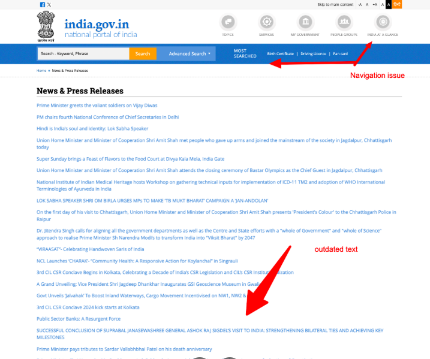
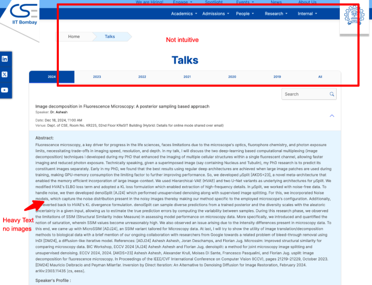
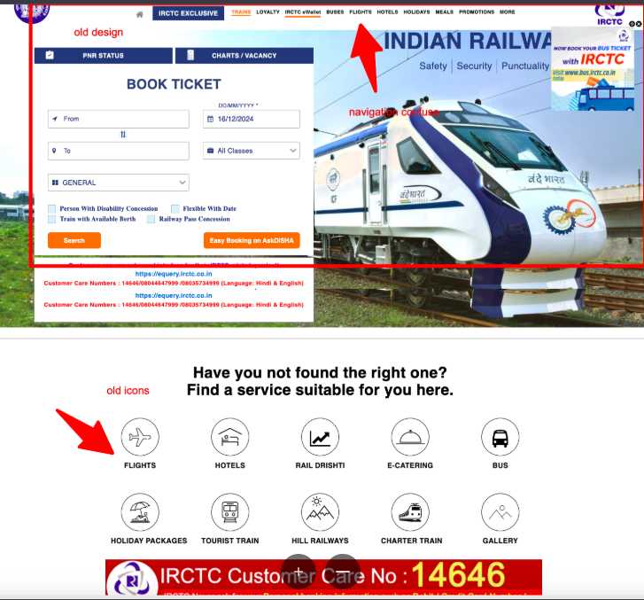

1. Indian Government Press Releases
Problems:
- Cluttered Design: The website uses an outdated, text-heavy design that makes it difficult for users to quickly grasp the key information.
- Navigation Issues: The site lacks a structured navigation system, making it hard to filter press releases by department or topic.
- No Search Functionality: There is no search bar to allow users to find specific press releases.
- Not Mobile-Friendly: The design does not scale well for mobile devices, forcing users to zoom in and out.
Suggested Improvements:
- Implement a modern, minimalistic design with clear typography and whitespace.
- Introduce a search function and improve navigation (e.g., by department or topic).
- Make the website responsive to provide a better experience on mobile devices.
Inspiration:
The US Department of State website is an excellent example of a modern, user-friendly government press release site. It features a clean design, well-organized content, and a robust search feature.
Screenshot Annotations:

2. IITM CSE Faculty Site
Problems:
- Overwhelming Content: The faculty page includes excessive information that may overwhelm users looking for specific details about a professor.
- Lack of Visual Design: The site uses basic text with minimal design, making it less engaging for visitors.
- No Search or Filter Option: There is no way to easily search for specific faculty members or filter by expertise.
Suggested Improvements:
- Provide a clear visual hierarchy to highlight essential information about each faculty member.
- Introduce search and filter options to easily navigate through faculty profiles.
- Enhance the design with images, better typography, and a consistent layout.
Inspiration:
The MIT Computer Science and Engineering Faculty page is a great example of a clean, engaging, and well-structured faculty directory that balances textual information with visual appeal.
Screenshot Annotations:

3. IIT B Talk
Problems:
- Unclear Navigation: The site’s navigation is not intuitive, with links and content hidden in unexpected places.
- Inconsistent Design: Some pages use different colors and fonts, creating a disjointed user experience.
- Lack of Visual Content: The site is overly text-heavy, with few images or videos to engage visitors.
Suggested Improvements:
- Make navigation clearer and more intuitive, with a sticky header or a clearer menu.
- Ensure design consistency throughout the site with a unified color scheme and typography.
- Include more multimedia content (images, videos, etc.) to enhance engagement.
Inspiration:
The Stanford TEDx website has an excellent design with intuitive navigation, consistent layout, and a balanced use of text and media.
Screenshot Annotations:

4. Indian Railways Website
Problems:
- Outdated User Interface: The design feels old and not user-friendly, with a lack of modern design principles.
- Poor Performance: Pages load slowly due to unoptimized images and scripts.
- Navigation Confusion: The website's structure is complex, and users often have to click multiple times to find relevant information.
Suggested Improvements:
- Redesign the website with a modern, user-friendly interface and faster load times.
- Optimize images and scripts to improve website performance.
- Simplify the navigation structure to ensure users can find information more easily.
Inspiration:
The UK National Rail website provides a clean and user-friendly interface that offers quick access to essential information like train schedules and ticket booking.
Screenshot Annotations:
